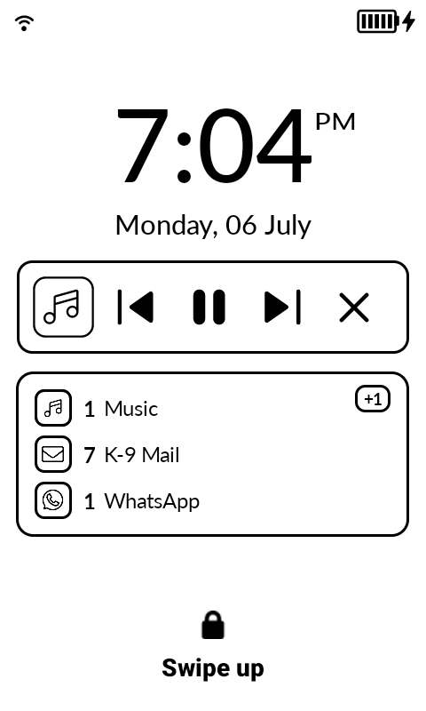
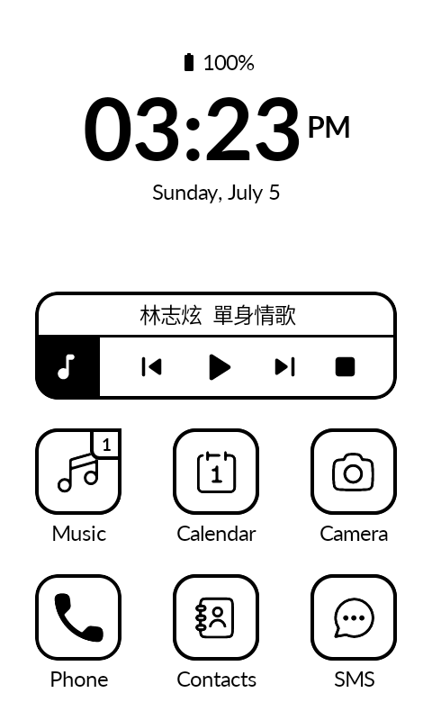
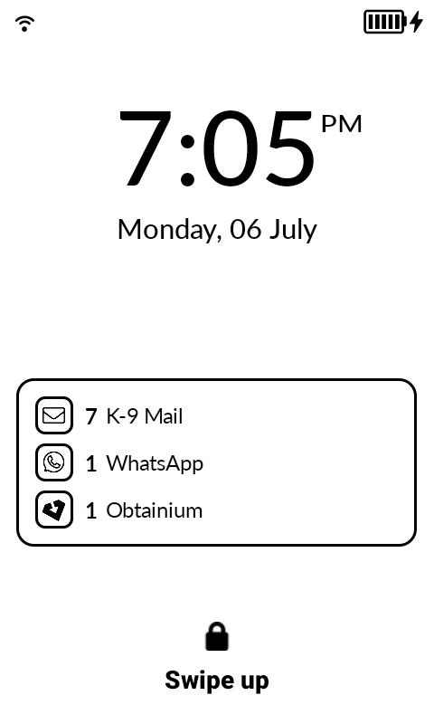
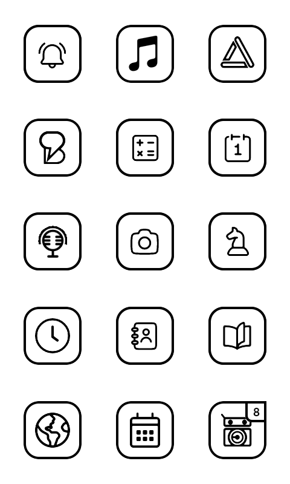
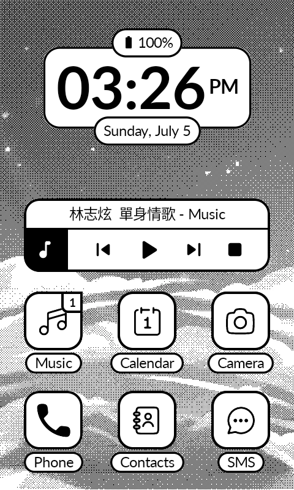
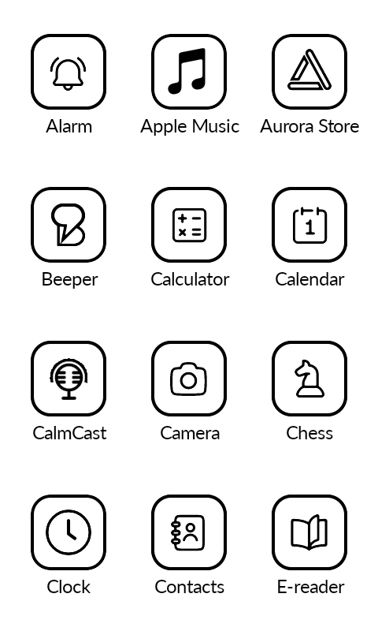
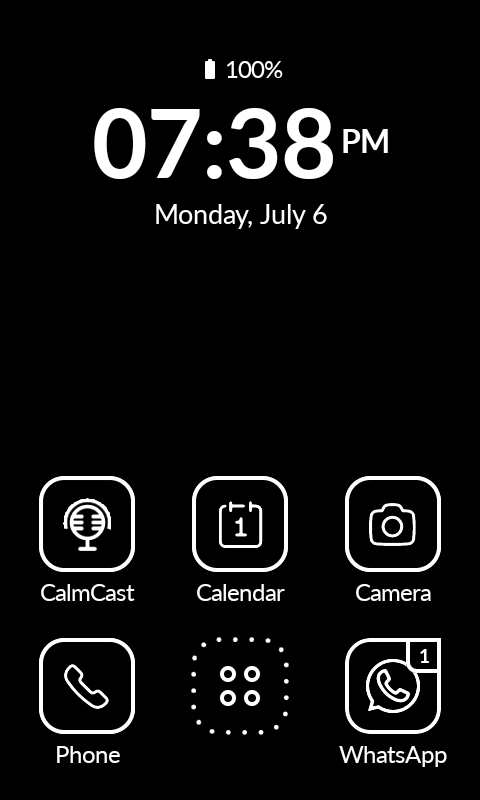
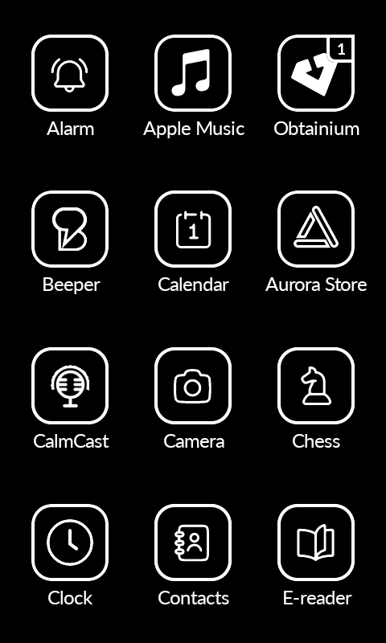
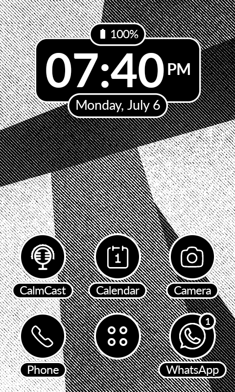

A minimal launcher for the Mudita Kompakt.
Katapult keeps the familiar grid of the stock launcher and adds what it leaves out: notification badges, reorderable apps, and customizable home shortcuts.




Setup
How to install
Download the APK, then install it on your Mudita Kompakt using the Mudita Center desktop software.
How to access Settings
Long-press on any empty area of the home screen.
How to replace home apps
Long-press on the Phone, SMS, or extra row shortcuts, then pick the app you want to assign.
Clock / Date shortcut
Long-press on the clock or date to assign an app to it.
Features
Adaptive App Grid
Horizontal or vertical swipe navigation with dot indicators and infinite scroll.
Dark Mode
White-on-black across the whole launcher, monochrome icons included.
Text Backgrounds
White islands behind clock, date, and app names keep text legible over any wallpaper.
Lockscreen Notifications
Experimental: per-app notification counts on the lock screen. Movable and resizable.
Music Widget
Playback controls with song info. Works with Auxio, Spotify, Fossify Music, Foobar, and more.
Icon Tinting & Shaping
Circle or rounded shapes. Uniform black & white across ~95% of apps.
Notification Badges
Badge counts on app icons. Works with any app that sends notifications.
E-Ink Optimized
Zero animations, instant swaps, screen refresh on home press to clear ghosting.
Extra Dock Row
Optional 3 additional shortcuts above the Phone/SMS bar.
Battery & Clock
Battery percentage with level icon, alarm indicator, selectable clock & date formats.
Simple Wallpaper
Set a background image directly. Not managed by Android.
Hide & Rename Apps
Hide from the context menu or bulk-hide. Rename any app.
Reorder Apps
Swap-based reordering with reset to alphabetical.
Double-Tap Brightness
Toggle display brightness by double-tapping the background.
Hide Status Bar
Remove the Android status bar for a cleaner look.
Permissions
Notification Listener
Required to read incoming notifications from Android and display badge counts on app icons. Without this, notification indicators won't work. Grant it in Settings > Notification Access.
System Settings
Required for the double-tap brightness toggle. Katapult needs write access to system settings to change screen brightness. Grant it in Settings > Apps > Katapult > Modify System Settings.
Package Access
Required to query all installed apps and display them in the grid. Also used to trigger the Android uninstall dialog from the app context menu.
Call Log & SMS (Mudita Kompakt only)
The Mudita Phone and Messages apps don't post Android notifications, so badges won't appear via the notification listener. To show missed call and unread SMS counts on these apps, Katapult reads the call log and SMS databases directly. These permissions are only requested on Mudita Kompakt devices.
Accessibility Service (only for Lockscreen Notifications)
An accessibility overlay is the only way an app can draw over the lock screen, so the experimental Lockscreen Notifications widget needs this. The permission sounds scary, but Katapult reads only the lock screen itself, never your apps, so the widget can hide when the PIN screen appears. It records and shares nothing; the open source code is the proof. Not requested unless you turn the widget on.
Screenshots











FAQ
Will it have customizable fonts?
No.
Will it have a customizable grid?
No.
Will it have third-party icon packs?
No.
Can I change date/clock formats?
Yes. In Settings, cycle Clock Format (System, 24-hour, or 12-hour with/without AM/PM) and Date Format (System, weekday, long, numeric, or ISO). Leave them on System to follow Android.
Can I reorder apps?
Yes. Long-press an app, tap Reorder, then tap another app to swap. Tap Save when done.
Will this launcher have a notification tray?
No. No notification tray, no letters screen.
Can it show notifications on the lock screen?
Yes. Enable the experimental Lockscreen Notifications widget under Settings > Lockscreen, then long-press it to move and resize. Full details here.
Notification indicators not showing?
Go to Settings > Notifications > Notification Log and check if the notification exists in Android. Many apps require Google Play Services for push notifications.
Found a bug, or have a question?
Open an issue on GitHub Issues.
Disclaimer
Katapult is an independent, open source project. It is not affiliated with or endorsed by Mudita. Mudita and Mudita Kompakt are trademarks of their respective owner.
The app is free. If you find it useful, you can support the work below.